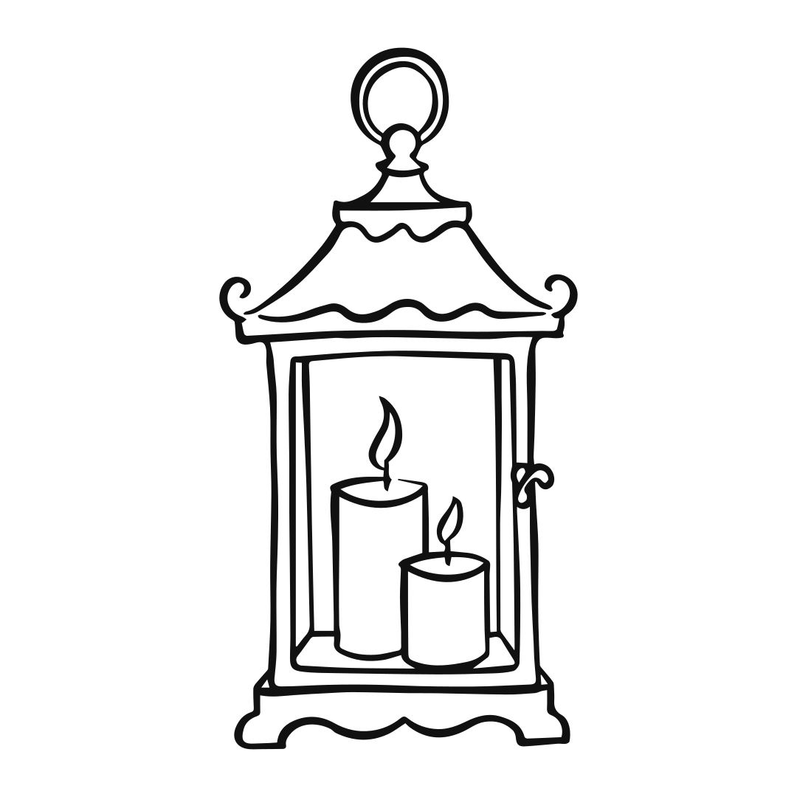

Zlatá hodina v Zlatníku
Zlatník má zlato už v mene. 29. mája zapadá slnko o 20:26, no za kopcom nad dedinou sa schová už okolo 20:00. Polhodina pred tým je najkrajšie svetlo celého dňa.
19:45
Zlatá hodina
- Výška slnka
- 5,9°
- Smer
- SZ · 297°
- Váš tieň
- 16 m
Odkiaľ bude svietiť
Slnko v máji zapadá ďaleko na severozápade, na azimute 305°. Stodola má presklenú západnú stenu, takže sa večer celá rozsvieti a svetlo prejde šikmo cez sálu. Okolo ôsmej zájde slnko za kopec a dvor ostane v mäkkom svetle bez tieňov.
-

Okuliare sa zídu
Podvečer bude slnko nízko a priamo v očiach, keď sa pozriete k sadu a jazierku.
-
Fotky medzi 19:30 a 20:00
Vtedy sú tiene dlhé a teplé. Po ôsmej je svetlo mäkké, dobré na portréty.
-

Sveter do auta
O desiatej večer býva v Zlatníku okolo 13 °C, v chladnejšie roky aj 10 °C.
Poloha slnka vypočítaná (NOAA) pre Stodolu Zlatník, 48,9685° s. š., 21,5480° v. d., letný čas; časy súhlasia so sunrise-sunset.org na minútu. Kopec: výškový model Copernicus cez Open-Meteo, odhad ±10 min. Teploty: ERA5, večery 26. 5.–1. 6. v rokoch 2021–2025. Budova: © prispievatelia OpenStreetMap.